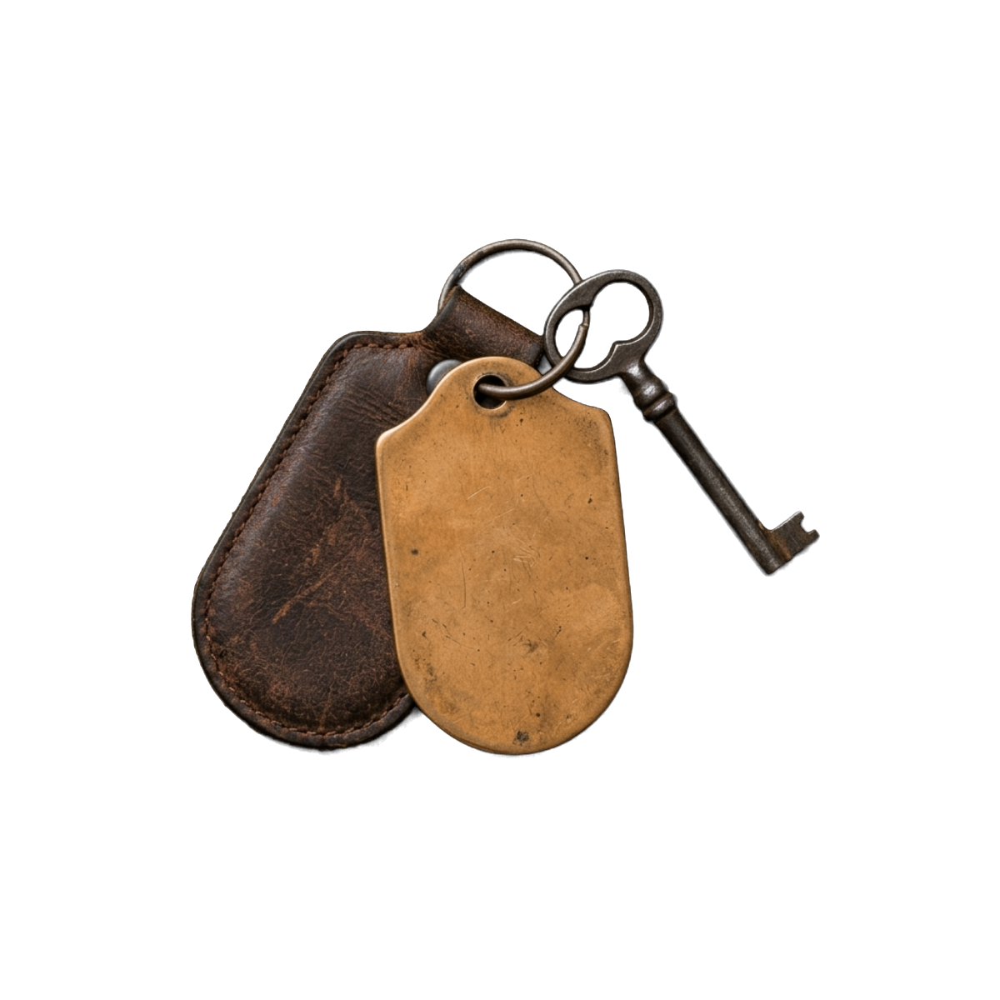

01
Cocklers
Ground, east end
- East, over the saltings
- 19 m²
- One double
The first room finished, because it is the one the plasterer wanted to practise on.
- Oiled oak
- Lime plaster
- Polished brass
Furnished
Wave 1

The rooms
Every room has a name, a gable and a stage it has got to. 3 of the 11 are spoken for by the people who funded the roof.
Marked rooms are wave one — furnished and released first.
01
Ground, east end
The first room finished, because it is the one the plasterer wanted to practise on.
02
Ground, east end
Step-free from the yard door. The only ground-floor room that is.
03
Ground, north
Darkest room in the house. We are not going to pretend otherwise.
04
First floor, east
The room the photographs keep being taken in.
05
First floor, south
Named before the house was, and the house was named after it.
06
First floor, south
A sandbar, not a drinks bar. People ask.
07
First floor, west
Best light in the building between six and eight in the evening.
08
First floor, north
Small, and priced as such when there is a price.
09
Second floor, east
Under the slates. Warm in August, and we are working on that.
10
Second floor, west
Low door. Six foot two is the practical ceiling.
11
Second floor, across
Still a shell, and the last thing we will finish.
Getting in
Ferryman is step-free from the yard door and will have a level shower. The other 10 are up at least one flight, and the two on the second floor are behind a low door that six foot two clears and six foot four does not.
We looked at a lift. It does not fit the stair core of a building this old without taking out the core, and taking out the core is not something the building survives. That is a limitation of the house, not a decision we are pleased with, and it is better said here than discovered on arrival.
If you want to know something specific about a room before the list opens, ask and we will measure it.
Opening May 2027
Five emails over the next year, and then an invitation forty-eight hours before anybody else gets one.
You are on the list
Check your inbox — there is one email there asking you to confirm, and nothing else happens until you do.
You are number 1,205.
1,204 ahead of you · 7 of 11 rooms plastered